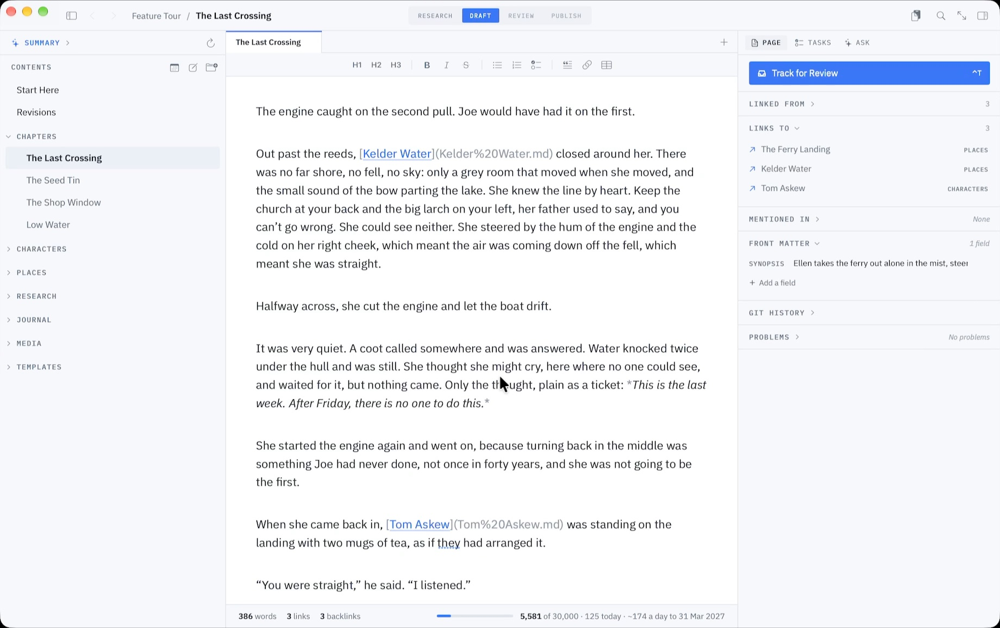

Markdown for projects
A project is a plan, a pile of notes, a list of things to do and, in the end, something written. All four fit in one folder of Markdown files, with nothing to sign up for. Grasmere is a Mac app that treats that folder as the project.

A project is a folder
Open any folder and it’s a project. Its Markdown files are listed down the left by their titles, in an order you can drag. A project.md at the top holds the project’s summary. Nothing is kept in a database, so the folder works as well in the Finder, in another editor or in git.
Allotment/
project.md
Plan.md
Budget.md
journal/
2026-10-11.md
people/
Margaret.md
research/
Green Manures.mdTasks, where you write them
A task is a Markdown checkbox, in whichever document it belongs to. Put a date at the end and it has a due date.
- [ ] Felt the shed roof 📅 2026-10-17
- [ ] Order a trailer load due: 2026-10-14
- [x] Lift the potatoesGrasmere gathers every task in the project into one list. Tick one there and it’s ticked in its document. Dates show as chips you can click to pick another day, and a busy project lists the dated tasks first, starting with the overdue.
A journal for each day
Press ⌃⌘T for today’s entry. It’s one Markdown file a day, in a journal folder, for what you did and what you’re turning over. A template can start each day the same way.
When a thought arrives while you’re in another app, press ⌃⌥⌘N, type it and press Return. It goes into today’s entry with the time, and you never leave what you were doing.
Notes that stay connected
Link one document to another with an ordinary Markdown link, such as [Margaret](people/Margaret.md). Each document shows which others link to it. Rename or move a file and every link to it is rewritten, so a project can be tidied up halfway through without breaking anything.
Diagrams and tables
A flowchart or a timeline is written in Mermaid, inside a code block, and drawn beneath it.
```mermaid
flowchart LR
L[The landing] -->|8 min| F[Fold End]
F -->|bus| S[School]
```Tables are drawn as tables and edited a cell at a time. Both are still plain text in the file, and GitHub shows the same diagram.
Plans, decisions and runbooks
Starting a document is the hard part. Brainstorm asks what it’s about and what kind of piece it is, then writes the questions it has to answer and makes them its headings. A decision gets the questions a decision needs. A runbook gets what it’s for, what must be true first, the steps, how you know it worked and what to do if it didn’t. The answers are yours to write.
Share what you’ve made
Project ▸ Build Website turns the folder into a small website, a page for each document with working links. There’s no JavaScript in it and nothing that tracks visitors. A document or a folder can go out as a PDF or a Word file too.
If the folder is a git repository, Grasmere can commit your changes a couple of minutes after you save, and push them. Its Shortcuts actions do the everyday things from the Shortcuts app or the command line, such as adding a line to today’s entry or checking for broken links.
Questions
Is this a project management tool?
Not in the sense of boards, assignees and charts. It suits a project one person runs and writes up, where the notes and the plan matter more than the workflow.
Can two people work on the same project?
Through a shared folder or git, yes. If a file changes on disk while you’re editing it, Grasmere asks which version to keep and never saves over either. It isn’t live collaboration.
What does Grasmere add to my folder?
A project.md at the top, and an index.md in a folder you’ve put in an order of your own. Both are ordinary documents.
Keep the whole project in one folder.
Open a folder and write the plan. The trial is free for 14 days.
Download for macOS Free for 14 days, then $14.99 once · macOS 15+Related
- Markdown for research
- A Markdown editor for Mac
- The Tasks and Due Dates guide
- The Journal guide
- More on writing in Markdown
Last updated .